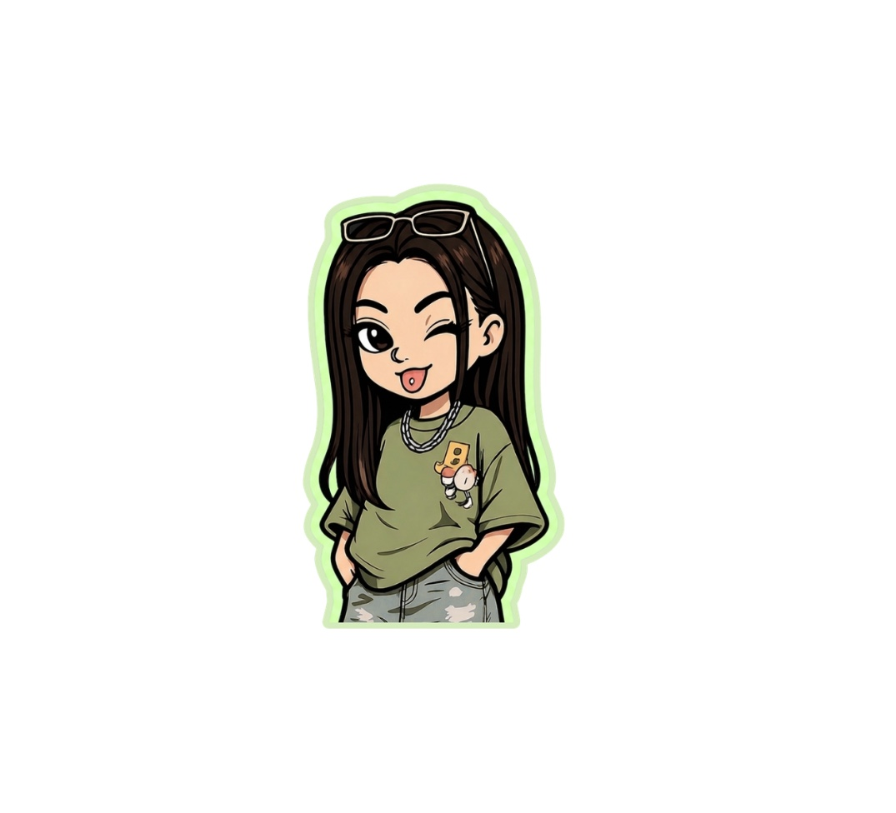

Yumi
Cugler.

Jornalista e designer de comunicação. Faço conteúdo com fundamento — para Instagram, para pautas, para o que precisar.

✦ sobre mim
Nada se constrói
sozinho —
tudo se complementa
entre pessoas e ideias.
Faço jornalismo, design e conteúdo — não como áreas separadas, mas como a mesma coisa vista de ângulos diferentes. Para mim, uma boa peça e uma boa apuração partem do mesmo lugar.
Meus
trabalhos.

Sneakerhead Tem História
Direção de arte e copy para Stories de divulgação de pesquisa universitária sobre cultura sneaker.
ver case →Projeto Parada Amiga visa mais segurança para as mulheres
O projeto havia sido lançado. Eu queria entender o que estava por trás — o processo, a tecnologia, as decisões. Saí com dados do STF, da delegada da DDM e do engenheiro responsável pelo sistema.
ler matéria →O Cansaço da Pressa na sociedade que nunca desacelera
Fiz essa matéria no semestre em que voltei à faculdade depois de um ano trancada. O tema não foi acidente — eu estava vivendo o que queria entender. Byung-Chul Han, duas fontes especializadas e a pergunta que ninguém estava respondendo: não como as pessoas adoecem, mas por quê.
ler matéria →Deficientes visuais: saiba a forma correta de identificar e orientar
Minha primeira matéria. As entrevistadas me colocaram para andar com a bengala pelo piso tátil — e eu entendi o que o jornalismo pode fazer quando para de explicar e começa a escutar.
ler matéria →Associação Amizadaria Solidária: fazer o bem sem olhar a quem
Cobertura da Associação Amizadaria Solidária — que desde 2016 oferece serviços terapêuticos, capacitação e apoio a pessoas em situação de vulnerabilidade em Sorocaba.
ler matéria →O Sinal Universal de Socorro com as Mãos
Vídeo informativo sobre o sinal de socorro para mulheres em situação de violência. Produzido durante atuação no BRT Sorocaba, não veiculado.
ver case →Submundo 808
Reportagem especial sobre funk bruxaria e cultura do interior paulista. Coprodução com Kauã Bueno — roteiro, recorte jornalístico e locução.
ver case →Análise de Métricas
Transformei uma conversa recorrente sobre dados em uma ferramenta estruturada. Cola os números, ela devolve análise com contexto — sem achismo, sem planilha.
ver demo →Briefing Estratégico
Saiu de um problema real de briefing incompleto. Estrutura as informações de um projeto antes de criar — organiza o que existe, aponta o que falta.
ver demo →Modo Foco
Criada para quebrar paralisia de tarefa. Divide qualquer entregável em passos mínimos com timer integrado — pensada para fluxo de trabalho com TDAH.
ver demo →Organizador de Entregáveis
Resume o estado de um projeto e aponta próximos passos com clareza. Saiu da necessidade de não perder contexto entre sessões de trabalho.
ver demo →O que eu faço.
três frentes, uma identidade
Design
Forma e conteúdo partem do mesmo lugar. O visual não ilustra a mensagem — ele é parte dela.
Jornalismo
Pesquiso o que já foi dito para encontrar o que ainda não foi. O ângulo é tudo.
✦ vamos trabalhar juntas?
Bora
conversar.
Se tem um porquê claro, tem espaço pra conversa.
entrar em contato →